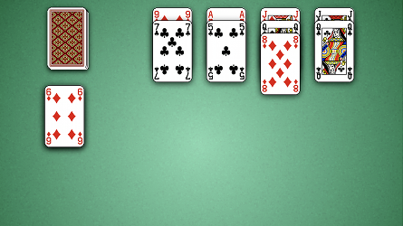
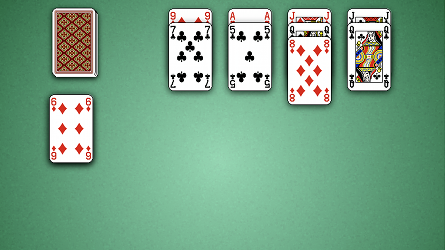

How to Play Aces Up
Game Setup
Stock: The stock is the pile of face down cards in the top left corner of the board. When the player
clicks on the stock, a card is dealt on top of each of the 4 tableau.
Foundation: The foundation is the area directly below the stock. Cards that have been removed from play are placed into the foundation.
Tableau: The tableau are the 4 piles of cards stacked to the right of the stock. The tableau begin with a single face up card each.

Foundation: The foundation is the area directly below the stock. Cards that have been removed from play are placed into the foundation.
Tableau: The tableau are the 4 piles of cards stacked to the right of the stock. The tableau begin with a single face up card each.

Rules
Aces Up is played with a single deck of cards. The goal of the game is to place all cards except for the four
Aces into the foundation. So a winning game has an empty stock and only the 4 Aces remaining in the tableau.
In this game, Aces are high.
The 4 cards on top of the tableau are considered to be in play. If multiple cards of the same suit are in play, then the cards with the lowest face values may be moved into the foundation. For example, in the game displayed above, we have a 7, 5 and Queen of spades. Therefore, we can move the 5 and 7 of spades into the foundation. If one of the tableau is empty, any card that is in play may be moved to fill the empty space.
The game is over when the stock is empty and no more moves can be made in the tableau.
The 4 cards on top of the tableau are considered to be in play. If multiple cards of the same suit are in play, then the cards with the lowest face values may be moved into the foundation. For example, in the game displayed above, we have a 7, 5 and Queen of spades. Therefore, we can move the 5 and 7 of spades into the foundation. If one of the tableau is empty, any card that is in play may be moved to fill the empty space.
The game is over when the stock is empty and no more moves can be made in the tableau.
Scoring
5 points for every card moved into the foundation.